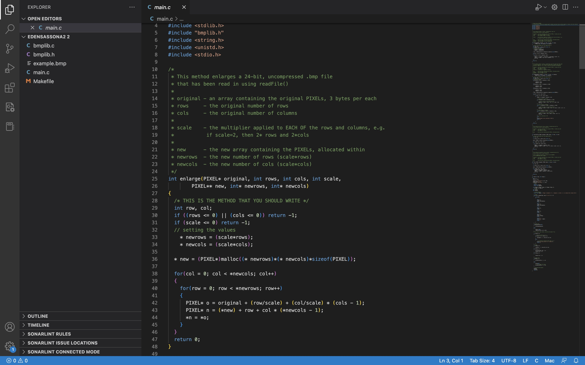

Systems Programming Project
Here is a projec I started when I first learned how to work in a Unix envirnment.
This was a project focused on being able to manipulate a .bmp file in a unix envirnment.
I am very proud of this project as it was my first introduction to the usage so it was a challange but very enjoyable.
View Project On My Github Page
Technologies:
- - C
- - UNIX
- - BMP
- - image manipulation
Example of a Vertical Flip

Example of a Turn
Example of a Flip